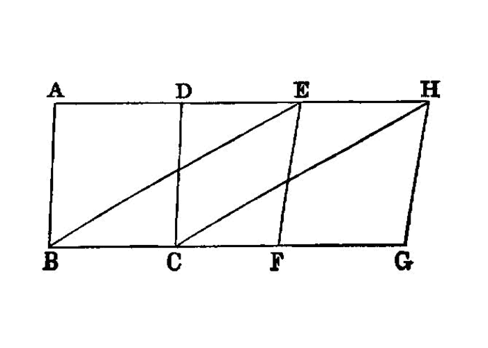

parallelogram equality
{kind=link}
Parallelograms which are on equal bases and in the same parallels are equal to one another.
===
Let ABCD, EFGH be parallelograms which are on equal bases BC, FG and in the same parallels AH, BG; I say that the parallelogram ABCD is equal to EFGH.
For let BE, CH be joined.
Then, since BC is equal to FG while FG is equal to EH,
BC is also equal to EH. [I.c.n.1]
But they are also parallel.
And EB, HC join them; but straight lines joining equal and parallel straight lines (at the extremities which are) in the same directions (respectively) are equal and parallel. [I.33]
Therefore EBCH is a parallelogram. [I.34]
And it is equal to ABCD; for it has the same base BC with it, and is in the same parallels BC, AH with it. [I.35]
For the same reason also EFGH is equal to the same EBCH; [I.35] so that the parallelogram ABCD is also equal to EFGH. [I.c.n.1]
Therefore etc.
## References
[I.33]: /elem.1.33 “Book 1 - Proposition 33” [I.34]: /elem.1.34 “Book 1 - Proposition 34” [I.35]: /elem.1.35 “Book 1 - Proposition 35” [I.c.n.1]: /elem.1.c.n.1 “Book 1 - Common Notion 1”